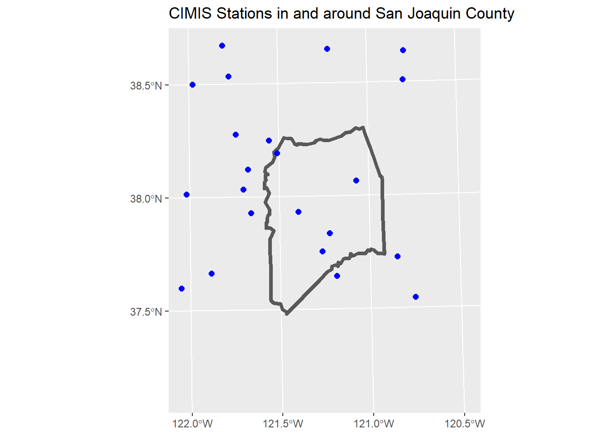
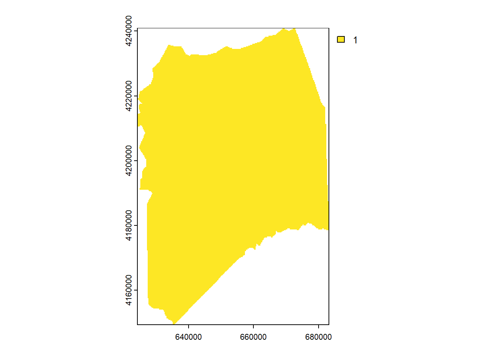
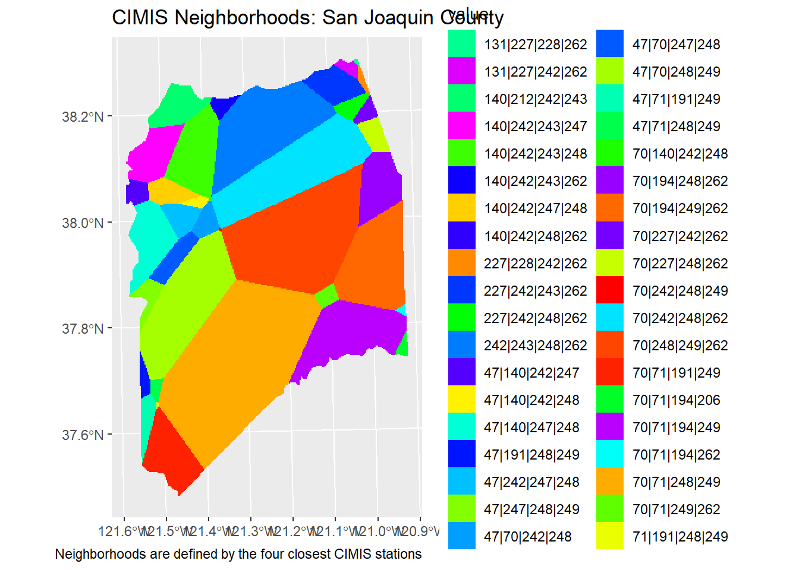

Defining CIMIS Neighborhoods for Preprocessing Data
Summary
This notebook delineates San Joaquin County into “CIMIS Neighborhoods”, where a ‘neighborhood’ is defined by the closest 4 CIMIS stations.
Why compute such peculiar spatial units?, you may ask. A very good question. This exercise is done in preparation for writing code to pre-process (more specifically replacing ‘bad’ and missing data) several years worth of hourly CIMIS station data, using an algorithm that uses the combined data from the four closest stations. This “cleaning” process takes ~10 minutes per neighborhood, so it has to be done ahead of time in order to be usable for an online decision support tool.
Setup
Load packages:
Import Layers
Define the ESPG code for a real-world projection system for the study area. (We do this because later on we’ll be finding nearest neighbors, and it’s generally a good practice to use real-world coordinates whenever an analyses uses distance or area.)
utm10n_wgs84_epsg <- 32610Import the county boundary (from US Census):
sj_bnd_sf <- tigris::counties(state = "CA", cb = TRUE, resolution = "5m") |>
filter(COUNTYFP == "077") |>
st_transform(utm10n_wgs84_epsg)Import the active CIMIS stations:
cimis_stn_rds_fn <- "cimis_stn.Rds"
if (file.exists(cimis_stn_rds_fn)) {
cimis_stn_sf <- readRDS(cimis_stn_rds_fn)
} else {
cimis_stn_sf <- cimir::cimis_station() |>
filter(IsActive == "True") |>
select(stid = StationNbr, name = Name, HmsLatitude, HmsLongitude) |>
distinct() |>
mutate(stid = as.numeric(stid),
lon = as.numeric(gsub("^.*/ ", "", HmsLongitude)),
lat = as.numeric(gsub("^.*/ ", "", HmsLatitude))) |>
select(stid, name, lon, lat) |>
sf::st_as_sf(coords = c("lon", "lat"), crs = 4326) |>
st_transform(utm10n_wgs84_epsg)
saveRDS(cimis_stn_sf, file = cimis_stn_rds_fn)
}Plot the CIMIS Stations around the county:
ext_buff <- 40000
map_extent = st_bbox(sj_bnd_sf) + c(-ext_buff, -ext_buff, ext_buff, ext_buff)
ggplot(sj_bnd_sf) +
geom_sf(fill = NA, lwd=1.5) +
geom_sf(data = cimis_stn_sf, col = "blue", shape =20, cex=3) +
xlim(map_extent[c(1,3)]) +
ylim(map_extent[c(2,4)]) +
labs(title = "CIMIS Stations in and around San Joaquin County")
Create a blank raster to store the neighborhoods
We’ll use a raster to delineate the neighborhoods (mostly for convenience and because it’s easier to visualize the zones):
## Create a blank raster with 250m pixels
sj_ext_rst <- terra::rast(sj_bnd_sf, res = 250)
## Assign the pixels a value (will be overwritten)
values(sj_ext_rst) <- 1
## Mask it to the county boundary
sj_bnd_rst <- mask(sj_ext_rst, sj_bnd_sf)
plot(sj_bnd_rst)
Extract the raster centroids as points
Next, we’ll extract the coordinates of the centroids of the raster cells (because it’s easier to find N nearest neighbors between two sets of points than raster cells & points):
Find Nearest Neighbors
For each point, we want to find the 4 nearest CIMIS stations, using the FNN package.
This package works with matrices, not spatial objects, so step #1 is to create two matrices:
library(FNN)
cimis_stn_mat <- st_coordinates(cimis_stn_sf)
dim(cimis_stn_mat)[1] 145 2sj_pts_mat <- st_coordinates(sj_pts_sf)
dim(sj_pts_mat)[1] 59668 2Now for each point, we can find the nearest 4 CIMIS stations:
[,1] [,2] [,3] [,4]
[1,] 139 108 120 44
[2,] 139 108 120 44
[3,] 139 108 120 44
[4,] 139 108 44 109
[5,] 139 108 44 109
[6,] 139 108 44 109dim(sj_pts_knn$nn.index)[1] 59668 4get.knnx() returns indices. The CIMIS stations involved here include:
all_nbhds_stid <- cimis_stn_sf |>
st_drop_geometry() |>
slice(unique(as.numeric(sj_pts_knn$nn.index))) |>
arrange(stid)
all_nbhds_stid |> knitr::kable(format = "html")| stid | name |
|---|---|
| 47 | Brentwood |
| 70 | Manteca |
| 71 | Modesto |
| 131 | Fair Oaks |
| 140 | Twitchell Island |
| 191 | Pleasanton |
| 194 | Oakdale |
| 206 | Denair II |
| 212 | Hastings Tract East |
| 227 | Plymouth |
| 228 | Diamond Springs |
| 242 | Staten Island |
| 243 | Ryde |
| 247 | Jersey Island |
| 248 | Holt |
| 249 | Ripon |
| 262 | Linden |
Identify Unique Neighboroods
Next, we create a factor object representing all unique combinations of 4 nearest stations (i.e., a “CIMIS Neighborhood”).
cimis_stid_grps_fct <- as.factor(apply(sj_pts_knn$nn.index, 1, function(x) paste(sort(cimis_stn_sf$stid[x]), collapse = "|")))
length(cimis_stid_grps_fct)[1] 59668nlevels(cimis_stid_grps_fct)[1] 38levels(cimis_stid_grps_fct) [1] "131|227|228|262" "131|227|242|262" "140|212|242|243" "140|242|243|247"
[5] "140|242|243|248" "140|242|243|262" "140|242|247|248" "140|242|248|262"
[9] "227|228|242|262" "227|242|243|262" "227|242|248|262" "242|243|248|262"
[13] "47|140|242|247" "47|140|242|248" "47|140|247|248" "47|191|248|249"
[17] "47|242|247|248" "47|247|248|249" "47|70|242|248" "47|70|247|248"
[21] "47|70|248|249" "47|71|191|249" "47|71|248|249" "70|140|242|248"
[25] "70|194|248|262" "70|194|249|262" "70|227|242|262" "70|227|248|262"
[29] "70|242|248|249" "70|242|248|262" "70|248|249|262" "70|71|191|249"
[33] "70|71|194|206" "70|71|194|249" "70|71|194|262" "70|71|248|249"
[37] "70|71|249|262" "71|191|248|249" Create Categorical Raster
For the purpose of visualizing the neighborhoods, we next constructor a categorical raster of the CIMIS Neighborhoods
## Start by making a factor copy of the raster that was used to generate the points
sj_4nnzones_rst <- as.factor(sj_bnd_rst)
## Replace the non-NA values with the cimis_stid_grps_fct (as an integer)
values(sj_4nnzones_rst)[!is.na(values(sj_4nnzones_rst))] <- as.numeric(cimis_stid_grps_fct)
## Assign the levels
levels(sj_4nnzones_rst) = data.frame(value=1:nlevels(cimis_stid_grps_fct),
cimis_group = levels(cimis_stid_grps_fct))Assign a color table:
cols_chr <- rainbow(nlevels(cimis_stid_grps_fct), end=5/6)[order(rnorm(nlevels(cimis_stid_grps_fct)))]
coltab(sj_4nnzones_rst) <- data.frame(value=1:nlevels(cimis_stid_grps_fct), col = cols_chr)
has.colors(sj_4nnzones_rst)[1] TRUEVisualize:
ggplot() +
geom_spatraster(data = sj_4nnzones_rst) +
labs(title = "CIMIS Neighborhoods: San Joaquin County",
caption = "Neighborhoods are defined by the four closest CIMIS stations")
Conclusions
There are 38 ‘neighborhoods of 4 CIMIS stations’ in the county. For best results, we need to ‘clean’ (i.e., fill in missing and ‘bad’ values) using these groups of 4. Cleaning ~8 years worth of hourly data for one group of 4 stations takes about <10 minutes, so doing 38 of them is definitely manageable.
Questions
However…
Cleaning weather station data in groups of 4 works really well, but results in the the same weather station having slightly different weather data time series depending what group it’s with. For example the ‘bad’ values for station 131 will have slightly different values when corrected using the combined data for 131-227-228-262 than when it was cleaned with combined data from 131-227-242-262. This isn’t a problem for the chill model, because we can select the correct time series based on the location being modeled, but seems inefficient and non-intuitive to have multiple “corrected” time series for the same station.
As an alternative, what if we were to use the “group of 4” data cleaning method on each of the 17 CIMIS stations individually (i.e., clean data for each station using its own time series plus its 3 nearest stations), and then use these time series for subsequent steps (i.e., generating the derived variables for the GAM in neighborhoods of 3)?
Another question for Emilio: how much of a gap in data can the RandomForest interpolation method handle? (e.g., if a station has a one-month gap in data / replaced by historical averages), can we still work with it?